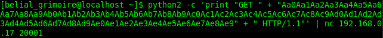

Nota importante: Cada vez que hago esto, coloco intrucciones a gdb que creo son muy necesarios, ya que cada que el debugger abre una aplicación, lo hace en un espacio de memoria relativa y al colocarle, unset env LINES y unset env COLUMNS, GDB muestra el uso de memoria real o muy cercano al que usa realmente la aplicación, facilitando la explotación de la vulnerabilidad.
Esto practicamente es igual al primero, la diferencia es que no hay una ayuda en mostrarte el buffer, en el primero si lo hay.
Ejecutamos la aplicación para ver que hace.
Lo primero es ver el código, de igual forma se puede intentar crashear el programa, por primera información, es peticiones HTTP y aquí hay detalles que hay que poner atención para poder mandar un exploit.
*Petición
*Datos
*Protocolo
Una petición general sería GET /index.html HTTP/1.1
Solo mostrar la información más exacta.
Dato interesante, puerto 20001, proceso para atacar 1360, esto puede cambiar dependiendo los intentos de acceso, lo que significa que utiliza un fork o threads para funcionar.
Como semuestra en la primera imagen todo funciona, ahora es momento de repetir la operación, con GDB.
Encontré en github una herramienta muy sencilla de utilizar, se llama "Python Exploit Pattern Tool" de Svenito.
Al parecer obtuvimos lo que buscamos, ahora exploremos con GDB donde empieza en buffer overflow.
Podemos ver donde inicia el overflow, el proceso es el mismo, encontrar el inicio del desbordamiento, verificar si sobreescribe esp y encontrar donde pondremos una futura shell.
Sin embargo, solo nos aparece un error de segmento, pero no lo que buscamos
Pero, ¿cómo lo arreglamos?, sencillo, hay que recordar que mandamos datos que pueden sacar del buffer a \xcc, si quitamos los datos de "GET " son 4, porque es GET+espacio, menos los 139 A's, menos el offset, menos "HTTP/1.1 " que son 9... HTTP/1.1+espacio.
156 en hexadecimal es = 9C.
Volvamos a intentarlo.
Listo.